Vibe coding practices that hold
Letting AI write the code is fast. These practices keep the speed and drop the hangover: specs, rules, dry runs, checks the AI cannot mark itself. 12 concepts; each opens its full page in its own library.
 Vibe CodingUse AI to quickly build real things — especially nice interfaces on top of the metadata — to explore, prototype and give people a way in. Great for experimenting; just don't ship the unspecified, ungated style to production.Breakthrough Modeling →
Vibe CodingUse AI to quickly build real things — especially nice interfaces on top of the metadata — to explore, prototype and give people a way in. Great for experimenting; just don't ship the unspecified, ungated style to production.Breakthrough Modeling →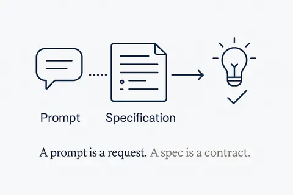
Write the Spec, Not the PromptA prompt is a request you repeat. A spec is a contract the work is checked against — and it is the artefact that survives the session.Structure Beats Magic →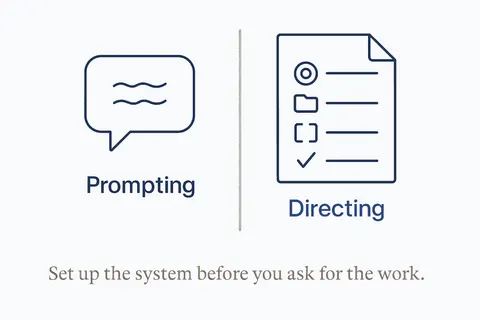
Stop Prompting, Start DirectingSet up a system before the task; give AI an outcome, context, constraints and a way to validate.Structure Beats Magic →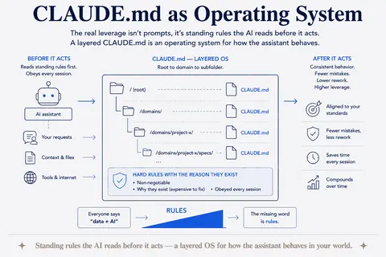
CLAUDE.md as Operating SystemStanding rules the AI reads before it acts — a layered OS for how the assistant behaves in your world.Structure Beats Magic →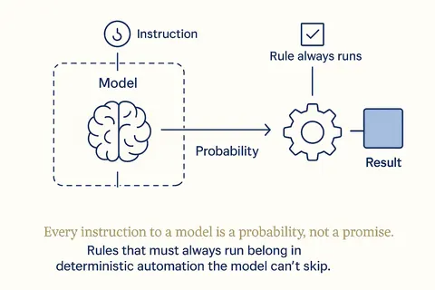
Hooks Over HopesEvery instruction to a model is a probability, not a promise. Rules that must always run belong in deterministic automation the model can't skip.Structure Beats Magic →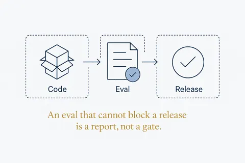
Evals Are the Release GateAn eval suite that doesn't block a release isn't a gate, it's a report. No evals, no ship.Structure Beats Magic →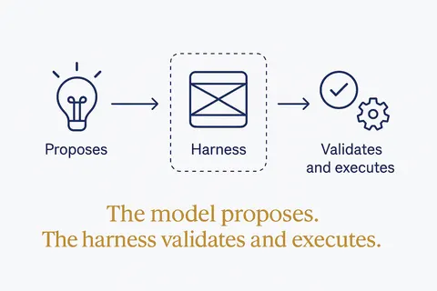
The Model Proposes, the Harness DisposesGive the model no direct external actions. It reasons and suggests; the surrounding layer validates, executes and records — that split is what makes an agent governable.Structure Beats Magic →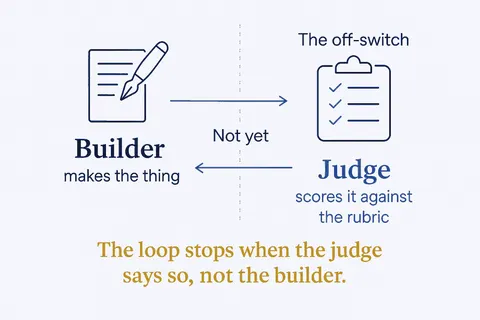
Never Marks Its Own HomeworkThe judge must be separate from the builder, and the score is the off-switch: a loop only stops when an independent evaluator says the rubric is met.Structure Beats Magic →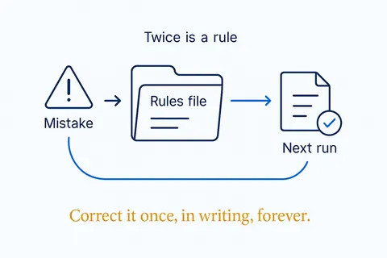
The Mistakes FileSame mistake twice = a new rule. Corrections you'd otherwise repeat forever get written into a file the AI reads every run.Structure Beats Magic →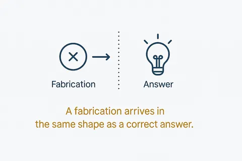
A Confident Error Has No TellA hallucination arrives in exactly the same shape as a correct answer. That is the whole problem — and why fluency is not evidence.Structure Beats Magic →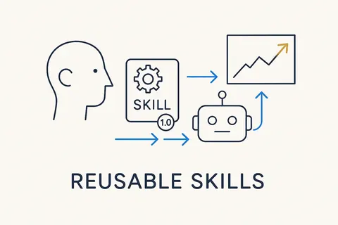
Reusable SkillsReusable, AI-readable units of behavior — a skill packages how to do one thing well, versioned and callable, so people and AI apply it the same way every time.Breakthrough Modeling →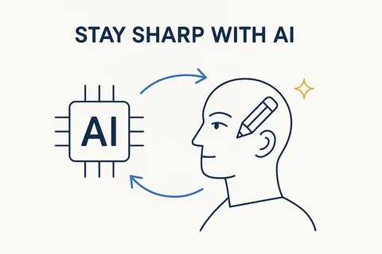
Stay Sharp with AIThe common fear is that AI makes us dumber. The answer isn't to avoid AI — it's to stay the curator and decision-maker, keep thinking, and keep learning, so AI amplifies your judgment instead of replacing it.Breakthrough Modeling →The neighbourhood
How this connects
Everything on this topic → (use cases, articles, resources)
Other categories: Design thinking and small experiments · From proof of concept to something you rely on · Data, rules and structure first · Build, buy or rent · Privacy and control · Building your own data models · Components and building blocks · The business OS